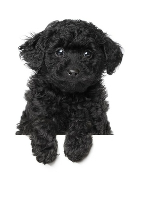

Fiche:

- Chien de compagnie
- 28 à 35 cm au garrot
- 6 à 8 kg
- Origine : France
- Chasse : 0/3
- Compagnie : 3/3
- Toilettage : 3/3
- Travail : 0
Historique de la race
Race d'origine française, le Caniche descend du Barbet, dont il hérite l'aspect général et l'aisance à la
chasse en milieu aquatique. Le Caniche était en effet utilisé dans la chasse aux canards ; étymologiquement,
les mots Caniche et canard possèdent d'ailleurs la même racine. Le terme Caniche était autrefois utilisé au
féminin pour désigner la femelle du Barbet. Progressivement, il s'est imposé comme l'un des meilleurs chiens
de compagnie grâce à son caractère jovial et dynamique. Le standard de la race a été établi en 1936.
Louis XVI possédait d’ailleurs un Caniche. Il était tondu en lion. Lors du Second Empire, le Caniche voyait
sa popularité exploser, si bien qu’il était devenu le chien de compagnie par excellence.
L'avis du vétérinaire
Modes de vie
Logement :maison ou appartement
Situation familiale :
toutes les situations familiales, compatible avec la présence de jeunes enfants et un propriétaire agé
vous devez être présent, vous pouvez consacrer plusieurs heures à votre chien
Disponibilité :
Utilités
Chien de compagnie :
Chien comme animal de compagnie. On attend de ces chiens qu’ils tiennent compagnie, qu’ils apportent de
l’affection, leur présence, leur fidélité, leur constance et leur joie de vivre.
Chasse :
Chien courant. Ce sont des chiens qui courent après le gibier non blessé ou qui poursuivent le gibier blessé
grâce à l’odorat.
Chien inclus dans un programme thérapeutique :
Aide auprès des malades psychiques. Ce sont des chiens utilisés en thérapie afin d’aider les personnes
malades psychiquement à instaurer un dialogue avec l’extérieur.
Aide en hôpitaux ou maisons de retraites. Ce sont des chiens utilisés pour accompagner et apporter du bien
être aux personnes âgées et malades hospitalisées à long terme.
Aide en milieu carcéral. Ce sont des chiens utilisés pour les prisonniers pour leur permettre de garder un
lien avec le monde extérieur et permettre une diminution des tensions.
Chien pour personnes handicapées :
Chien pour personnes souffrant d’un handicap sensoriel. Ce sont des chiens utilisés pour aider la vie
quotidienne des personnes malvoyantes ou malentendantes. Il est nécessaire de leur apporter une éducation
spécialisée.
Brossage et entretien :
quotidien
Education et remarque concernant son comportement :
intelligent, actif, éveillé. Education ferme
Risque de maladie : diabète insipide, persistance du canal artériel
Remarques :
déteste la solitude, ne fait pas de mue